Onshape for 3D Printing Workshop#
This workshop introduces engineering students to CAD fundamentals in Onshape, with every step tied back to one question: will this actually print well? It is structured like an Instructables guide, but written with educators in mind so you can efficiently run this in your classroom, lab, or makerspace in under two hours.
A lot of first CAD projects look great on screen and then turn into a stringy, droopy mess on the printer. That usually isn’t the printer’s fault. It’s the design. The main goal of this workshop is to show students that a handful of simple habits (smart wall thicknesses, the \(45^\circ\) rule, chamfers in the right places, and knowing which way holes should run) make the difference between a print that fails and one that comes off the bed looking clean with no supports at all.
We’ll be using Onshape because it runs entirely in a web browser, works on Chromebooks and school laptops, or basically any potato with internet access. Onshape is also free for students and educators. This means you don’t have to worry about licenses, expensive engineering computers, or tricky installs.
End Product#
The end product of this workshop is a small desk organizer with personalized debossed text on the front and cable holders on the back that keep your charging cables from sliding off the desk. Every feature on it was chosen so that the whole part prints with zero support material, which means no wasted fillament. The print should be able to be completed in about an hour on most modern 3D printers.
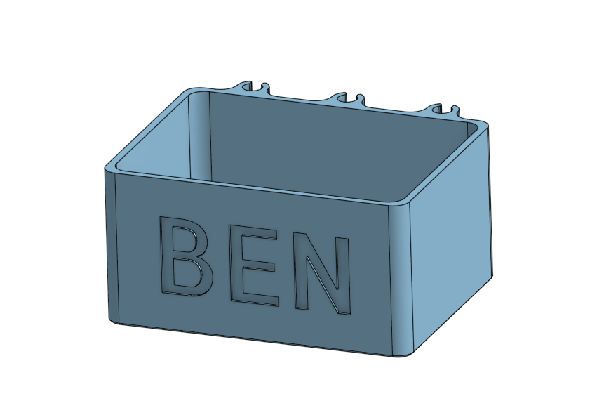
Materials & Classroom Budget#
The only real cost here is filament. The organizer uses between 35-40g of PLA, which is well under a dollar per student at typical filament prices. You should be able to print about 25 of these organizers on a single roll of fillament.
General Tools#
Computer with a modern web browser and internet access
A free Onshape Education account (have students sign up before the workshop, since email verification can eat the first 15 minutes)
A 3-button mouse with a scroll wheel (navigating 3D space on a trackpad is painful for beginners)
Slicing software for your printer (Cura, PrusaSlicer, etc.)
If you want to support makers like me, do not use Bambu Studio or software from other companies that are trying to take the control away from makers. There is a big rabbit hole to go down here, but we should fight to keep printers, slicers, and the files created open and accessible, and the products we makers make should stay our own intellectual property.
An FDM 3D printer with a standard 0.4 mm nozzle
Consumables#
PLA filament (about 40 g per organizer)
Building the Box#
1. Sketching the Base#
Before starting, hide all of the default planes except the Top plane. It keeps the screen clean and makes it much harder to accidentally sketch on the wrong plane.
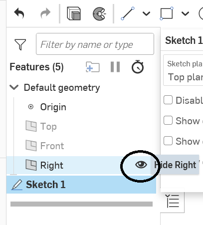
Create a sketch on the Top plane
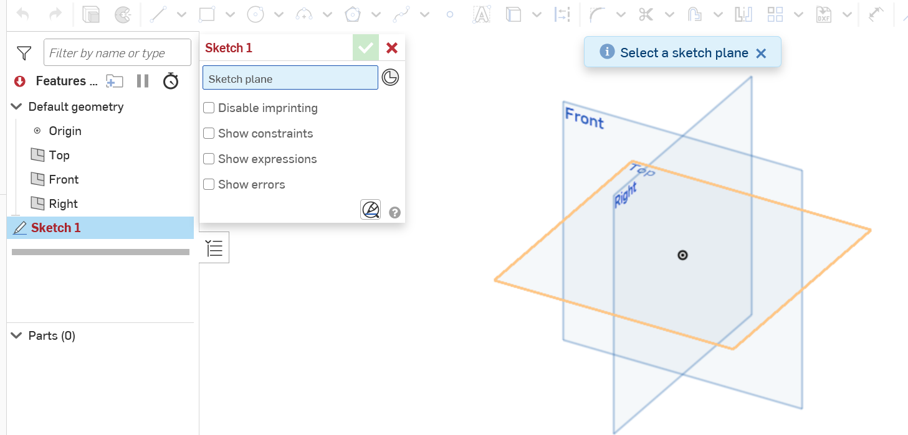
and draw a Center Point Rectangle starting on the origin.
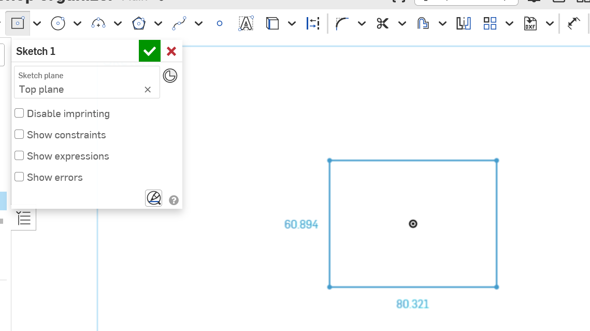
Dimension it 80 mm x 60 mm. Your lines should turn black, meaning the sketch is fully constrained.
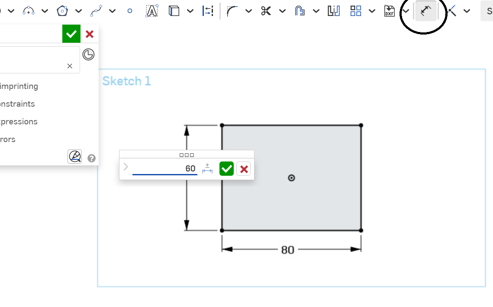
Extrude the sketch 40 mm.
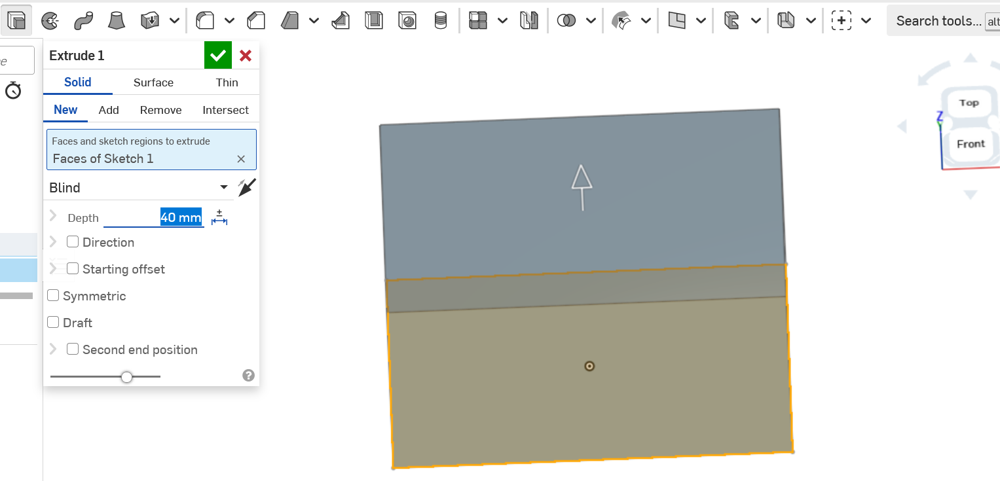
Print Tip: Locking the rectangle to the origin is a CAD habit, not a printing requirement. Your slicer will re-center the part on the build plate no matter where it sits in Onshape. What the origin does do is keep your sketch fully constrained, so if you change 80 mm to 100 mm later, the box grows evenly instead of drifting off in one direction.
Sketching on the Top plane also means the bottom of your box is the face that will sit on the build plate. Keep that in mind, because almost every decision from here on depends on knowing which way is “up” for the printer.
Feel free to now hide the top plane as well, we won’t be needing it anymore.
2. Shelling the Box#
Use the Shell tool and select the top face of the box. Set the thickness to 2 mm. This hollows out the box and leaves 2 mm walls and a 2 mm floor.
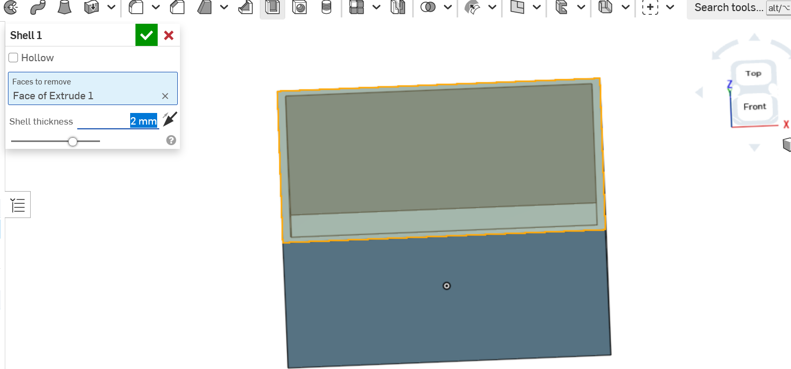
3D Printing Note: Wall Thickness and Nozzle Math#
Most printers use a 0.4 mm nozzle, and the slicer builds walls out of side-by-side lines of plastic (called perimeters) that are each about one nozzle-width wide. When your wall thickness is a clean multiple of the nozzle width, the slicer can fill it with complete perimeters:
0.8 mm = 2 perimeters (the absolute minimum for anything you want to survive)
1.6 mm = 4 perimeters (stiff, but still a little flexible)
2.0 mm = 5 perimeters (recommended for most generall walls)
If you pick something awkward like 1.0 mm, the slicer has to squeeze in a skinny gap-fill line between perimeters, which prints slower and is weaker. Most slicers can handle this pretty well with modern techniques, but we might as well keep the geometry simple if we can. Our 2 mm walls come out as solid plastic all the way through, so infill settings barely matter for this part.
Building the Cable Holders#
3. Sketching the Cable Holder#
Create a new sketch on the top face of the hollowed box (the rim). The cable holders go on the back wall, the outside face of one of the long sides.
Draw two concentric circles. The inner circle has a 5 mm diameter. The outer circle is 1.6 mm away from the inner circle all the way around.
Make the outer circle tangent to the outside edge of the back wall, and center the circles along the length of the box.
Draw two arcs, one on either side of the circle. Each arc should be tangent to both the outer circle and the outside wall of the box. These blend the holder smoothly into the wall.
Constrain the top point of each arc (where it meets the circle) to be horizontal with the center point of the circles.
Draw a box on the far side of the circles, away from the wall, with a width of 3 mm and any height you like, vertically aligned with the center of the circles. This is the opening the cable snaps through.
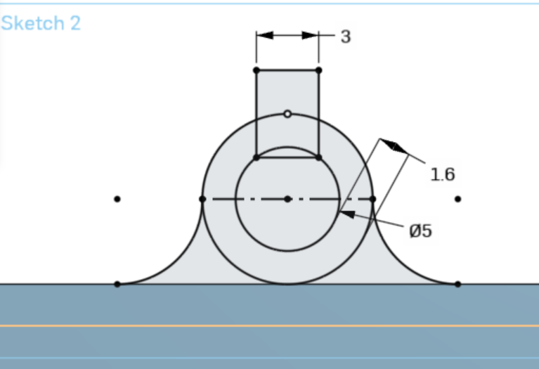
Print Tip: That 1.6 mm ring is four perimeters thick. It’s stiff enough to hold a cable, but thin enough to flex a little as the cable snaps through the 3 mm opening. Thicker than about 2.4 mm and it won’t flex. Thinner than about 1.2 mm and it gets brittle.
4. Extruding the Holder#
Extrude the regions made by the arcs and the outer circle 5 mm. Leave the inner circle and the 3 mm box unselected so the cable pocket and opening stay open. I extruded down into the part so the top of the holder stays flush with the rim.
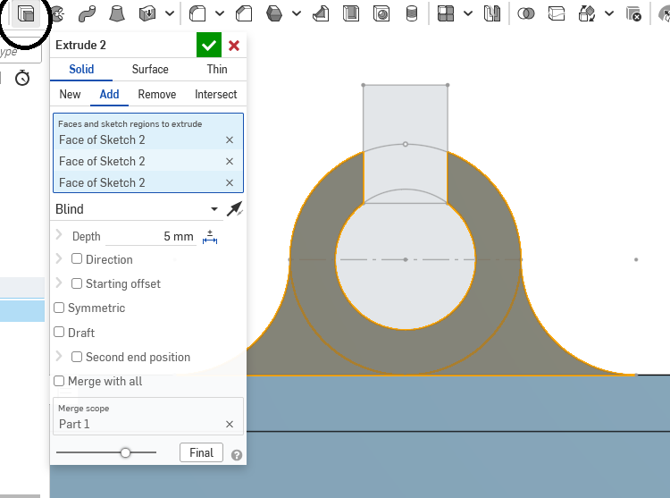
3D Printing Note: Why the Cable Runs Vertically#
Since we sketched the holder on the top face and extruded it straight down, every single layer of the holder is the exact same C shape. The pocket prints as a perfect circle with no droop, because nothing is hanging in mid-air inside the clip.
It’s also stronger this way. A 3D print is a lot like wood grain: it’s strong along the layers and weak between them. When a cable pushes the clip open, that force runs sideways along the layer lines instead of trying to peel the layers apart.
5. Filleting the Opening#
Add 0.5 mm fillets to the inside vertical edges of the opening. Rounded lips guide the cable into the clip instead of snagging or scraping it.
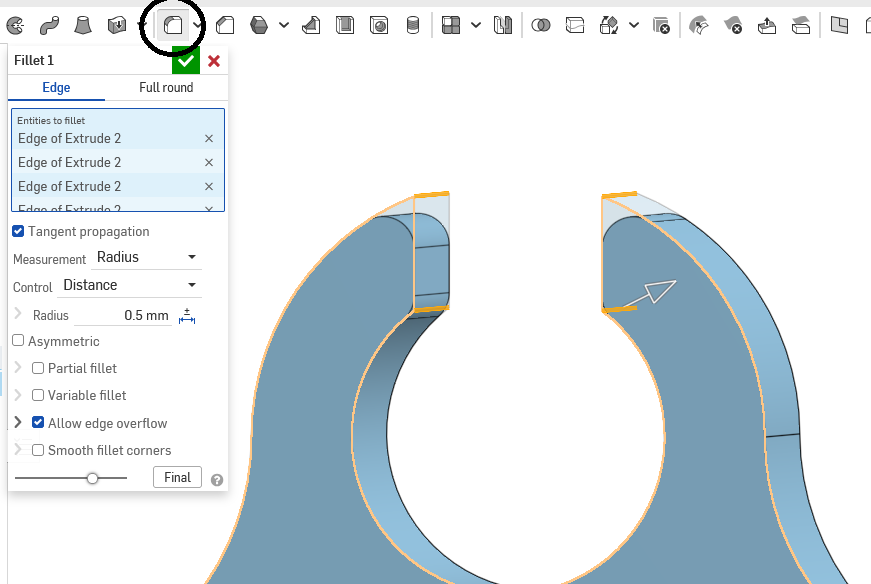
Instead of adding the fillet on the 3D part, you could have used curves or the sketch fillet options inside the sketch. I personally prefer to keep the sketches as simple as possible, and this way I can quickly adjust fillet and other dimensions without having to worry about it screwing up my sketch.
6. Chamfering Under the Holder#
There’s a catch with our cable holder: it sticks out from the back wall, and it starts 35 mm up in the air. Nothing is underneath it. If we printed it like this, the printer would be laying plastic down on top of nothing. This means that the first few layers will be a little stringy, and it is also possible that some of the loose filament will catch the nozzle, causing a larger error than just droopy holders.
Add a chamfer to the bottom edge where the cable holder meets the back wall, with a distance of 8 mm. Because this edge is an inside corner, Onshape adds material, which creates a \(45^\circ\) support wedge under the holder.
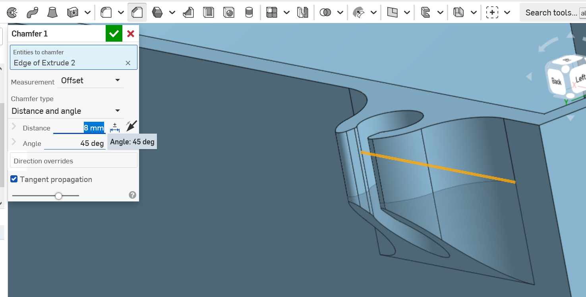
The distance that lines up flush with the end of the holder works out to around 7.5 mm. I used 8 mm because it keeps the numbers nice, and it adds a little extra thickness to the holder.
3D Printing Note: The 45° Rule#
This is the single most important rule in designing for 3D printing, especially if you want to avoid supports.
A printer builds a part one layer at a time, and every new layer needs something underneath it to sit on. When a wall leans outward (an overhang), each layer sticks out a little past the one below it. The question is how far it can stick out before it droops.
With a typical 0.2 mm layer height and a 0.4 mm wide line of plastic, a \(45^\circ\) slope shifts each layer outward by exactly 0.2 mm, which is the same as the layer height. That means each new line is still sitting on about half of the line below it. That’s enough for the plastic to stay put as it cools.
Steeper than \(45^\circ\) from vertical (closer to a straight wall): prints cleanly with no supports
Right around \(45^\circ\): the practical limit for most printers and materials
Shallower than \(45^\circ\) (closer to flat): each layer is mostly hanging in the air, and you get droop, rough surfaces, and a need for support material
This is also why we used a chamfer here and not a fillet. A fillet is a curve, and the bottom of that curve starts out nearly flat (\(0^\circ\)). That’s the worst possible overhang, right at the start of the feature. A chamfer keeps a constant \(45^\circ\) the whole way.
7. Patterning the Holders#
Now let’s add more holders without redrawing anything. Use Linear Pattern and set the pattern type to Feature.
Select the extrude, the fillets, and the chamfer from the feature list.
For the direction, select the Right plane. Either side face of the part works too.
Set the distance to 25 mm and 2 instances. Feel free to increase or decrease the distance between the features as well. If you decrease the distance to 13mm, you can fit 5 holders on the back, but it might look a little cramped. Feel free to add a few more fillets in the inside edges between the holders to clean up the appearance
Check Centered to get one instance on either side of center.
Check Reapply features. This one is important. It tells Onshape to rebuild each feature in its new spot. Without it, Onshape tries to duplicate the entire face of the box, which usually fails or gives you some very strange geometry.
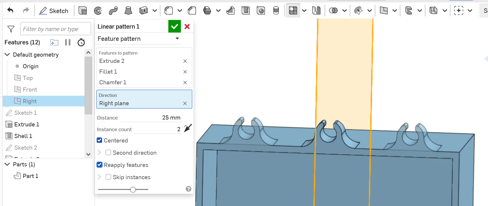
Personalizing the Box#
8. Adding Text#
Create a sketch on the front face of the box (opposite the cable holders) and use the Text tool to write whatever you like. Mine says “BEN”.
I made my text box 20 mm tall, which leaves 10 mm above and below it on the 40 mm wall. I also vertically aligned the text box with the origin so it sits in the middle of the wall. Depending on how many characters you use, you may need to adjust the height. Longer names may need multiple text boxes to center properly.
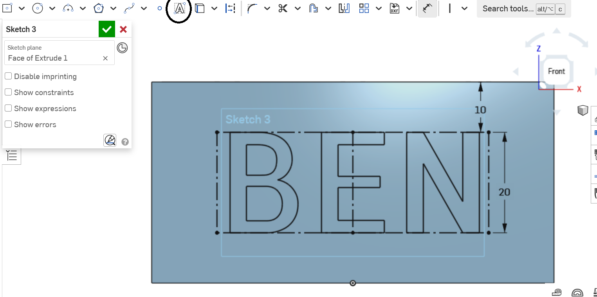
9. Extruding the Text#
Extrude the text inward 0.8 mm as a Remove.
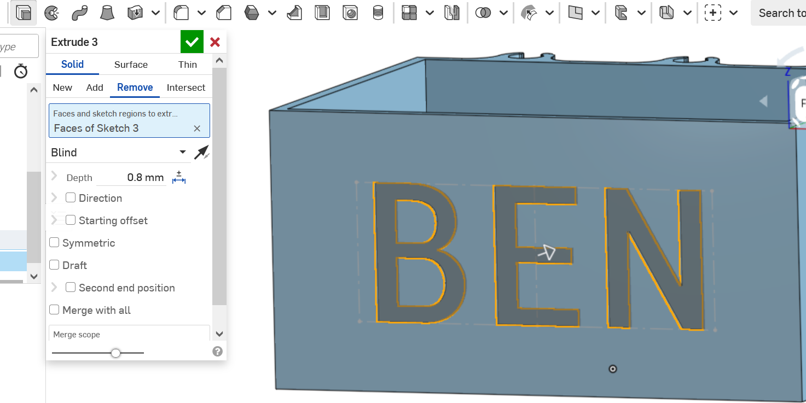
3D Printing Note: Text Depth and Fonts#
Debossed (cut-in) text on a vertical wall is one of the easiest ways to personalize a print, and it needs no supports. But to make it look good, here are a few things to keep in mind:
Stick around 0.8 mm deep. That’s two nozzle widths, which is plenty to read clearly. Our wall is only 2 mm thick, so a deeper cut leaves a thin wall behind the letters. The top edge of each letter is also a tiny overhang, and the deeper you cut, the more that edge sags. Once you’ve got the basics down, feel free to experiment with depth for your particular font.
Not every font will work. Some of the fonts in Onshape, especially script, thin, or decorative ones, have overlapping geometry that won’t extrude. If your text feature turns red or letters go missing, that text can’t become part of your print. Swap to a different font before you move on.
Bold sans-serif fonts are your friend. Any stroke thinner than the 0.4 mm nozzle simply won’t print. This is something to check for in your slicer when you are preparing your print file. The print preview will show you if the text will actually come through or not.
Finishing Touches#
10. Rounding the Corners#
Add 4 mm fillets to the vertical edges of the box, both inside and outside.
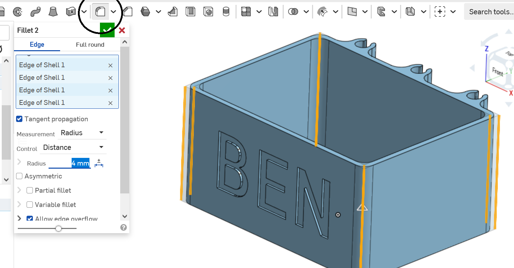
Print Tip: Vertical fillets are great for printing. They’re printed in the flat X/Y plane, so there’s no overhang at all. Rounded corners also let the print head glide around the corner instead of slamming to a stop and changing direction, and they reduce the stress that builds up as plastic cools. Sharp corners are where warping and lifting off the bed usually start.
11. Chamfering the Bottom#
Add a 0.6 mm chamfer to the bottom edges of the box. The easiest way is to select the bottom face itself, which grabs every edge around it, including the curved fillet edges.
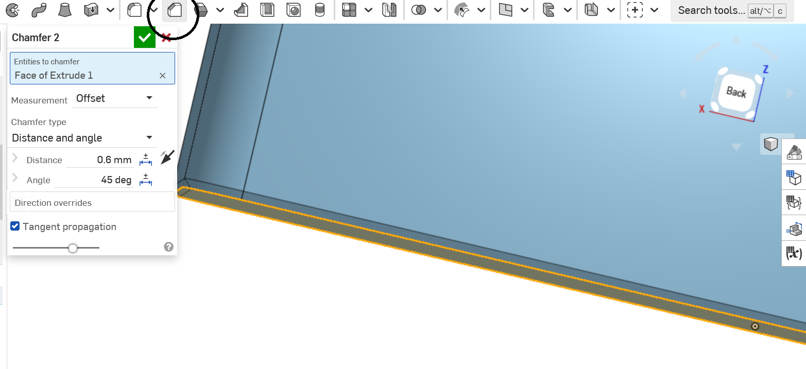
3D Printing Note: Elephant’s Foot#
The first few layers of a print are squished down onto a heated bed so they stick well. That squish pushes the plastic slightly outward and creates a small flared lip around the base of the part, known as elephant’s foot. It makes parts measure a little oversized at the bottom and can keep them from fitting against other parts.
A small chamfer on the bottom edge gives that extra plastic somewhere to go, so the flare fills in the chamfer instead of sticking out past your wall.
0.6 mm is a great default.
You don’t need to go past 0.8 mm. Any bigger and you’ll end up with an odd-looking bevel around the base.
General rule: anything touching the build plate gets a chamfer, never a fillet. A fillet on a bottom edge is a \(0^\circ\) overhang right on the first layers, and it tends to curl. (try printing a sphere to really see this effect… it isn’t pretty.)
Exporting and Slicing#
Right-click your part in the Parts list in the bottom left corner and choose Export.
Select STL as the format, set the units to Millimeter, and set the resolution to Fine. Coarse resolution turns small curves like the cable pocket into visible flat facets.
Open the file in your slicer. The box should be sitting open side up, flat on the build plate.
Make sure supports are turned off, slice, and look through the layer preview.
Print Tip: Check the Parts list before you export. If you see Part 2, Part 3, or more, a feature was probably set to New instead of Add, and you’ll only export one piece of your organizer.
Great Job!#
That’s all there is to designing a clean, support-free print! Send this off to your printer, and you should be able to get a desktop organizer in about an hour if your printer is using Klipper. If you have an older printer, such as an Ender 3, or an older Prusa model that is using Marlin, it will probably take closer to 2-3 hours. Still not bad though!
The organizer is a simple part, but the same habits apply to nearly everything you’ll design for 3D printing: wall thicknesses in multiples of your nozzle, the \(45^\circ\) rule for overhangs, chamfers on anything touching the bed, and holes that run the right direction. From here, try adding dividers, a pen cup, or a phone slot. Every new feature is a chance to ask, “Which way is up for the printer?” Have fun designing!
Bonus: Printing Holes#
The organizer doesn’t need any holes, but holes come up in almost every real project, and the direction a hole runs completely changes how it prints. For this demonstration, I use a simple test block so we can compare holes side by side.
Vertical Holes#
A hole that runs up and down (along the Z axis) is the easy case. Every layer is just a clean circle, so it prints round with no supports.
To make one, sketch a circle on a top face and Extrude Remove through the part.
Print Tip: Printed holes almost always come out a little undersized, since the plastic squishes slightly inward. A hole designed at 3 mm often prints closer to 2.7 mm. Add 0.2 to 0.4 mm to the diameter of any hole that needs to fit something, and print a small test piece first if the fit really matters.
Horizontal Holes and the Teardrop Fix#
A hole that runs sideways is a different story. Picture the printer building that circle from the bottom up. The bottom half is fine, since each layer is supported by the one below. But at the top of the circle, the roof of the hole becomes almost perfectly flat. That’s a \(0^\circ\) overhang, and it sags.
The fix is the teardrop. Instead of a round roof, we bring the top of the hole to a point using two \(45^\circ\) lines. Now every part of the hole follows the \(45^\circ\) rule.
To sketch a teardrop:
Sketch a circle on the side face where the hole should go.
Draw a vertical construction line up from the center of the circle.
Draw two lines, each tangent to the circle, that meet at a point on the construction line.
Add a \(45^\circ\) angle between each line and the construction line. This means a total of \(90^\circ\) angle between the two tangent lines
Trim the small arc at the top of the circle between the two lines.
Extrude Remove through the part.
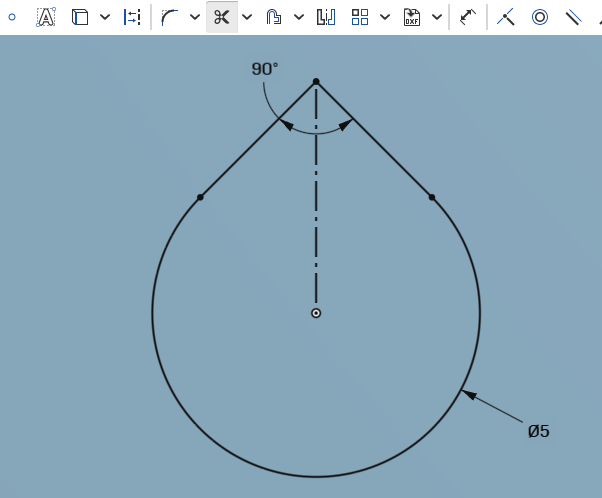
Print Tip: The point of the teardrop has to face up toward the top of the print, not just up on your screen. If you later rotate the part in the slicer, the teardrop needs to rotate with it.
How Big Can a Teardrop Get Before It Looks Like a Teardrop?#
The tip of a \(45^\circ\) teardrop sticks up above the circle by about \(0.41 \times r\) (where \(r\) is the radius of the hole). On small holes, that tip is tiny and usually sags slightly anyway, so the hole still looks round. On big holes, the tip becomes obvious.
Hole Diameter |
Tip Height Above Circle |
What to Do |
|---|---|---|
Up to ~3 mm |
~0.6 mm or less |
A plain circle is usually fine. The sag is barely noticeable |
~3 to 8 mm |
~0.6 to 1.7 mm |
Use a full teardrop. It still reads as a round hole |
Over ~8 mm |
More than ~1.7 mm |
Use a flat-topped teardrop. Cut the tip off with a horizontal line |
For bigger holes, a flat-topped teardrop keeps the hole looking round. The short flat section at the top is a small bridge, where the printer stretches plastic across a gap between two supported points. Short bridges like this print just fine.
These are starting points. Your printer, material, and cooling will shift the numbers a bit, so it’s worth printing a test block with a few sizes to see how your printer does.